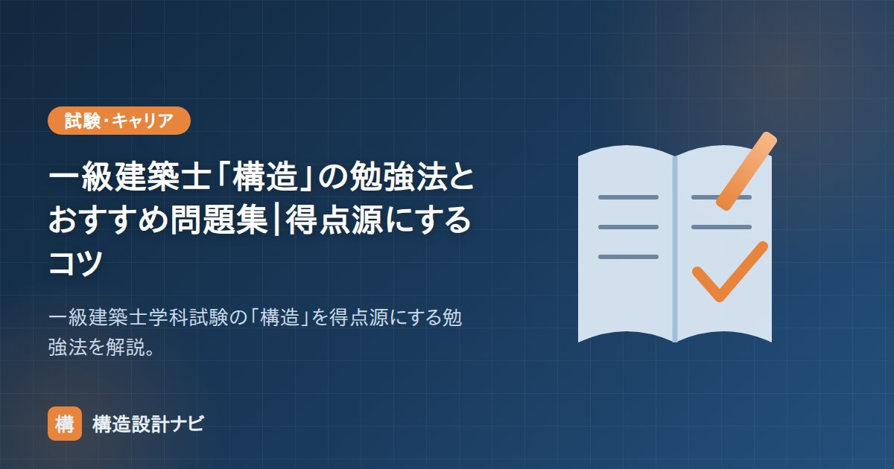

一級建築士「構造」の勉強法とおすすめ問題集｜得点源にするコツ

一級建築士の学科試験で、「構造」は努力が点数に直結しやすい得点源です。特に前半の構造力学は計算問題が中心で、解き方のパターンを身につければ安定して高得点が狙えます。この記事では構造を武器にする勉強法を解説します。
「構造」の出題構成
学科試験の「構造」は全30問で、大きく3つに分かれます。
| 分野 | おおよその問題数 | 性質 |
|---|---|---|
| 構造力学（計算） | 6〜7問 | 計算問題。パターン習得で満点が狙える |
| 各種構造（RC・S・木・基礎など） | 16〜18問 | 知識問題。範囲が広く配点も大きい |
| 建築材料 | 5〜6問 | 知識問題。コンクリート・鋼材・木材など |
配点が大きいのは各種構造ですが、まず確実に固めたいのは構造力学です。計算問題は答えが一つに決まり、努力が裏切られにくいからです。
力学問題を満点にする手順
- 反力 → 応力の流れを徹底：「反力の求め方」→「Q図・M図の描き方」を完璧に。力学の8割はこの応用です。
- 頻出テーマを絞る：断面の性質、たわみ、座屈、静定・不静定、固有周期は毎年のように出ます。
- 同じ問題を3周：解法を「思い出す」のではなく「手が覚える」まで反復します。
- 力学は公式の意味を理解すれば暗記量が激減します（当サイトの基礎記事はこの方針で書いています）。
- 各種構造は「数値・大小関係」が問われがち。積載荷重の大小、層間変形角1/200・剛性率6/10・偏心率15/100などの数字は確実に暗記。
各種構造・材料の進め方
- テキスト→過去問を分野ごとに回す。範囲が広いので「分野を1つずつ潰す」のが基本。
- RC・S・木・基礎の横断的な比較を意識する（「RC造・S造・SRC造・木造の違い」のような整理が効く）。
- 耐震・制震・免震、地震力の考え方など近年の出題テーマも押さえる。
過去問の使い方
一級建築士は過去問の繰り返し出題が多い試験です。市販の過去問題集（過去7〜10年分・分野別収録のもの）を主軸に、最低3周します。1周目は解けなくてOK、2周目で理解、3周目でスピードと精度を上げる、という回し方が王道です。
独学か、スクールか
| 独学 | 資格スクール | |
|---|---|---|
| 費用 | 数千〜2万円程度 | 数十万円〜 |
| 強み | 低コスト・自分のペース | 強制力・最新情報・製図対策 |
| 向く人 | 学習習慣がある人・構造実務者 | 独学が続かない人・製図が不安な人 |
構造分野は独学と相性がよい一方、製図試験まで含めるとスクールの価値が上がります。教材選びは「最新年度版」「分野別」「解説が詳しい」を基準にしてください。
試験で反力・Q図・M図を鍛えた人ほど、実務に入ると構造計算ソフトの出力をそのまま信じてしまいがちです。私は新人には、ソフトの応力図を開く前に必ず手計算で桁レベルの概算値を出させ、結果を自分の頭で検算できる状態にしてから照査に進ませています。
当サイトの構造力学の基礎カテゴリは、試験頻出テーマを図解で解説しています。資格の全体像は「構造設計一級建築士とは？」、合格後のキャリアは「構造設計者の年収」をどうぞ。
学習スケジュールの例
学科試験は例年7月です。逆算して、構造分野をどう進めるかの目安を示します（働きながら独学する場合の想定）。
| 時期 | 構造分野でやること | 目安の学習時間 |
|---|---|---|
| 前年10月〜12月 | 構造力学の基礎固め。反力・応力・断面の性質を、テキストで理解しながら例題を解く | 週5〜8時間 |
| 1月〜3月 | 過去問1周目。各種構造（RC・S・木・基礎）を分野ごとに潰す | 週8〜10時間 |
| 4月〜5月 | 過去問2周目。間違えた問題の原因分析。力学は解法を手が覚えるまで反復 | 週10時間以上 |
| 6月〜試験直前 | 過去問3周目＋模試。数値・大小関係の最終暗記。苦手分野の集中補強 | 可能な限り |
構造は早い時期に力学を固めておくと後が楽になります。力学は理解に時間がかかる一方、一度身につけば忘れにくく、直前期に暗記科目へ時間を回せるからです。逆に、力学を後回しにすると直前期に手が回らず、確実に取れるはずの6〜7問を落とすことになります。
分野別の優先順位
限られた時間で点を最大化するため、費用対効果の高い順に取り組みます。
| 優先度 | 分野 | 理由 |
|---|---|---|
| 最優先 | 反力・応力（Q図・M図） | 力学のほぼすべての土台。ここが崩れると他が積み上がらない |
| 高 | 断面の性質・たわみ・座屈 | 毎年出題。パターンが決まっており得点しやすい |
| 高 | RC造・S造の各種規定 | 出題数が多く、配点が大きい |
| 中 | 木造・基礎構造 | 出題数は中程度。数値の暗記で対応できる |
| 中 | 建築材料（コンクリート・鋼材） | 暗記中心。直前期でも伸ばせる |
| 低 | 耐震・制震・免震などの応用テーマ | 出題は1〜2問。深入りしすぎない |
- 層間変形角 1/200（緩和1/120）、剛性率 6/10以上、偏心率 15/100以下
- 標準せん断力係数 C0：一次設計 0.2以上、保有水平耐力 1.0以上
- 壁倍率の上限 5.0、筋かい45×90片側＝2.0
- 単位水量 185kg/m³以下、水セメント比の上限 65%（一般）
- 鋼材のヤング係数 2.05×10⁵ N/mm²（材種によらず一定）
これらの数値は「なぜその値なのか」とセットで覚えると定着します。たとえば層間変形角1/200は仕上げ材を守るため、壁倍率の上限5.0は柱の引き抜きが先に生じるのを防ぐため——というように、理由がわかっていれば、記憶があいまいでも推論で正解にたどり着けます。
よくある質問
Q1. 構造力学が苦手でも一級建築士に合格できますか？
合格できます。学科試験は各科目の足切り点（おおむね半分程度）と総合点で判定されるため、力学の計算問題を落としても、知識問題で挽回すれば構造科目としては十分な点数を確保できます。ただし、計算問題は6〜7問と決して少なくなく、パターンが限られているため努力が点に直結しやすい分野です。苦手意識があるなら、まずは反力の求め方だけでも確実にできるようにすると、それだけで数問拾えます。
Q2. 過去問は何年分やればよいですか？
一般的には過去7〜10年分を3周するのが目安とされます。一級建築士は過去問と類似した問題が繰り返し出題される傾向が強いため、この範囲を確実に理解していれば相当な得点が見込めます。重要なのは年数より周回数と理解の深さで、10年分を1周するより、7年分を3周して「なぜその選択肢が誤りなのか」を説明できる状態にするほうが効果的です。
Q3. 構造の実務経験がないと不利ですか？
試験に関しては大きな不利にはなりません。学科試験は法令・規準の知識と基本的な力学が中心で、実務経験がなくてもテキストと過去問で対応できる内容です。むしろ実務者のほうが、実務での慣習と試験で問われる原則が食い違って混乱することもあります。ただし、部材の名称や納まりのイメージがあると理解が速いのは事実なので、図解の多い教材やサイトを併用すると効率的です。
まとめ
- 「構造」は努力が点に直結する得点源。まず計算問題（力学）を満点に近づける。
- 反力→Q図・M図を土台に、断面・たわみ・座屈・固有周期など頻出テーマを反復。
- 過去問を最低3周。各種構造は数値・大小関係を確実に暗記する。
※出題数・制度は年度により変わります。受験前に試験元の最新の公式情報を確認してください。